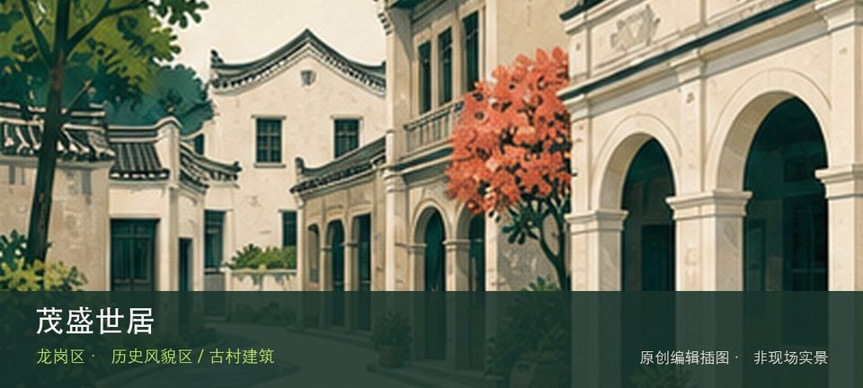

适合谁
适合建筑、地方史和社区观察者；参观时须尊重居民、宗教礼仪与生产秩序。

SHENZHEN GUIDE · 207
横岗街道四联社区 · 历史风貌区 / 古村建筑
茂盛世居位于横岗街道四联社区，保存较完整的客家围屋以门楼、月池和围合院落呈现横岗客家聚落形态。先辨认茂盛世居门楼，再观察月池与围屋院落，两者共同说明这里为何不能被同类地点的泛化标签替代。阅读这处地点要把茂盛世居门楼与月池与围屋院落放回仍在使用的街巷或社区中，不把历史空间当成布景。先看公开区域，再按居民生活、礼仪和开放边界调整停留，不进入封闭建筑。
WHY GO
适合建筑、地方史和社区观察者；参观时须尊重居民、宗教礼仪与生产秩序。
到达茂盛世居后先确认茂盛世居门楼是否可进入，再将月池与围屋院落作为可取消的第二站；遇拥挤、暴晒或降雨就提前折返。
公共交通先到横岗街道四联社区片区，再以茂盛世居公开参观入口为终点；多入口地点须按计划游线选择入口，并预先锁定返程站点。
车辆停在茂盛世居外围正规公共停车场后步行进入；不驶入窄巷，不占居民门口、作业区或消防通道。
10 月至次年 4 月步行较舒适；夏季避开正午，雨天留意石板、台阶和老建筑周边湿滑。
NEARBY IDEAS
 编辑配图·非现场实景
编辑配图·非现场实景
深圳市龙岗区毕昇印刷文化博物馆位于横岗，以活字、印刷设备与出版传播为主题，能从工艺理解知识复制，但目前闭馆，旧展览信息不能视为开放承诺。
 编辑配图·非现场实景
编辑配图·非现场实景
深圳市龙岗区万国珠宝汇矿物博物馆位于六约珠宝产业区，矿物晶体、宝石原石和珠宝加工在产业场景中连续呈现，可从自然形成看到商业分类与设计应用。
 编辑配图·非现场实景
编辑配图·非现场实景
神仙岭水库碧道位于龙城街道盐龙大道神仙岭水库，约2.6公里的环库碧道在18.6公顷山水范围内完善雨水沟盖板、亲水平台和休憩设施，可与大运公园的神仙湖景观分开理解又顺路组合。